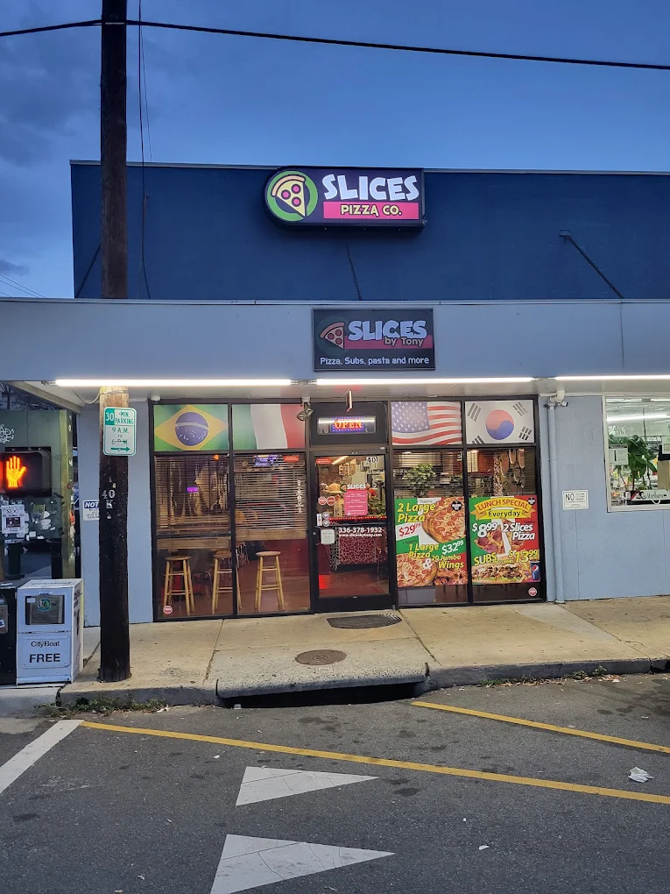
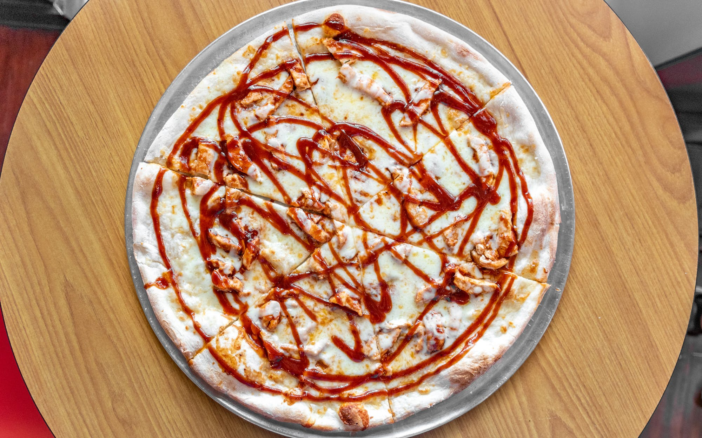
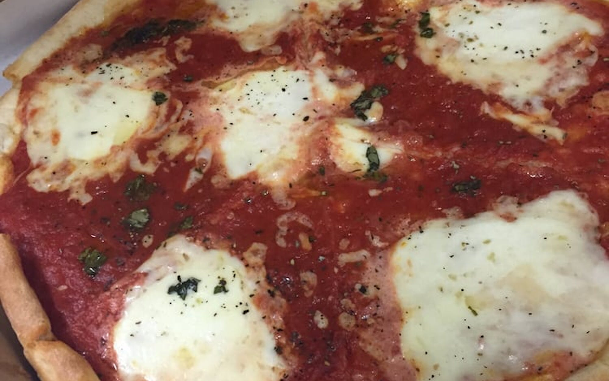
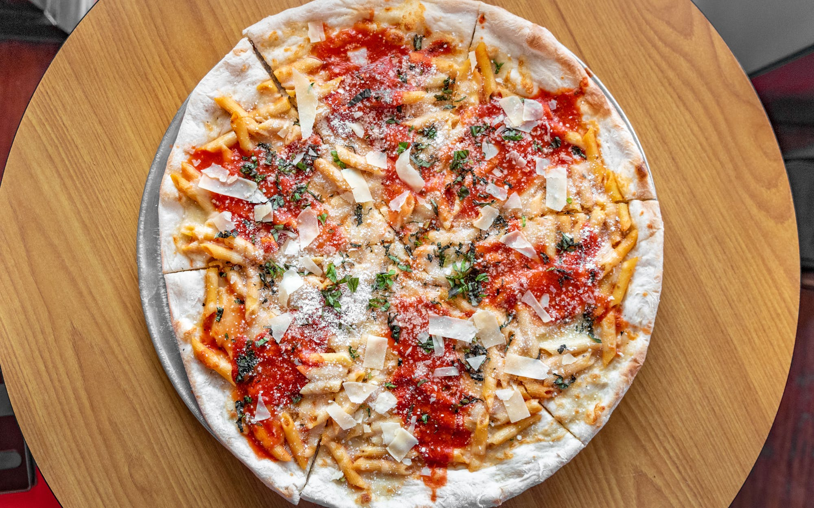

Slices Pizza by Tony
Located at 401 Tate St, Greensboro, NC 27403 Slices is your prime location for a delicious slice of pizza. They have a wide variety of specialty slices including my personal favorite, BBQ chicken.
Signature dishes
BBQ Chicken
Mozzarella cheese, grilled chicken breast, BBQ sauce.
Margharita Pizza
Mozzarella cheese, pizza sauce, fresh basil, extra virgin oil.
Baked Ziti Pizza
Tomato sauce, white sauce, Parmigiano cheese, basil.